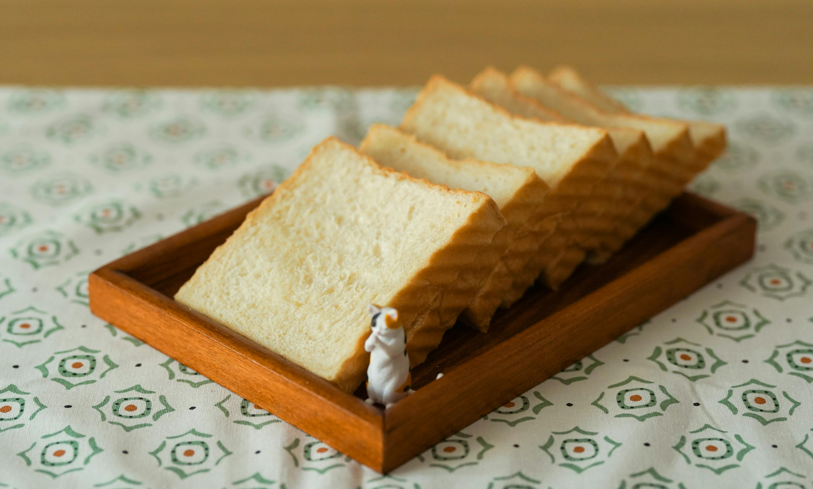

White bread apparently makes you fat, wheat bread is not too bad, and sourdough bread is.. salty. Whole grain bread is like eating oats and seeds with yeast. Not terrible but I'd prefer something else. Brioche bread is soft and squishy, and whole wheat just feels... dry.
OK REAL QUICK. BREAD RANKING:
1. White Bread(because I'm used to eating it)
2. Brioche Bread(french toast :P)
3. Sourdough(it's not bad tbh)
4. Whole Wheat(I'd rather eat bread that's dry than eat bread with nuts in it.)
5. Whole Grain Bread(no.)

I just like using this kind of bread to make PB and J sandwiches. Photo by Cats Coming from Pexels: https://www.pexels.com/photo/loaf-bread-on-brown-tray-2942327/